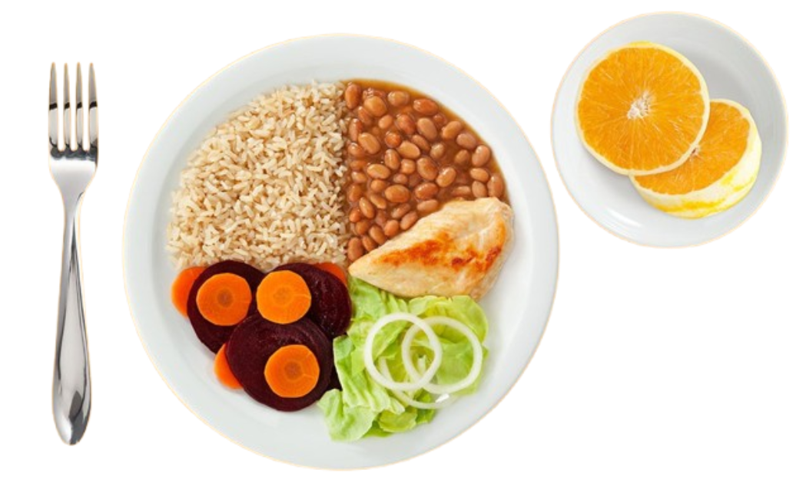

Comer bem é um ato de cuidado com você.
Uma alimentação equilibrada fornece os nutrientes que seu corpo precisa para funcionar bem todos os dias. Aqui você encontra informações científicas, inspirações e dicas práticas para fazer escolhas mais saudáveis.

Clique em um nutriente abaixo para ler a sua explicação detalhada.
As proteínas são macromoléculas essenciais formadas por aminoácidos. Elas desempenham um papel vital na construção, manutenção e reparação dos tecidos musculares, pele, órgãos e cabelo. Além disso, atuam na produção de enzimas digestivas, hormônios e no fortalecimento do sistema imunológico.
Os carboidratos são a principal e mais eficiente fonte de energia para o corpo humano e para o funcionamento do cérebro. Quando consumidos, transformam-se em glicose para abastecer as células cotidianamente. O segredo está em escolher os tipos complexos, que possuem absorção lenta e evitam picos de açúcar no sangue.
Diferente do que muitos pensam, as gorduras insaturadas (boas) são fundamentais. Elas protegem o sistema cardiovascular controlando o colesterol, auxiliam na absorção de vitaminas lipossolúveis (A, D, E, K), isolam termicamente o corpo e mantêm a estrutura das membranas celulares e neurônios saudável.
Conhecidos como micronutrientes, eles não fornecem energia direta, mas sem eles o corpo para de funcionar. Vitaminas (como C, D, Complexo B) e Minerais (Cálcio, Ferro, Zinco) controlam as reações químicas celulares, aceleram o metabolismo, evitam a fadiga mental e protegem o organismo contra vírus e bactérias externos.